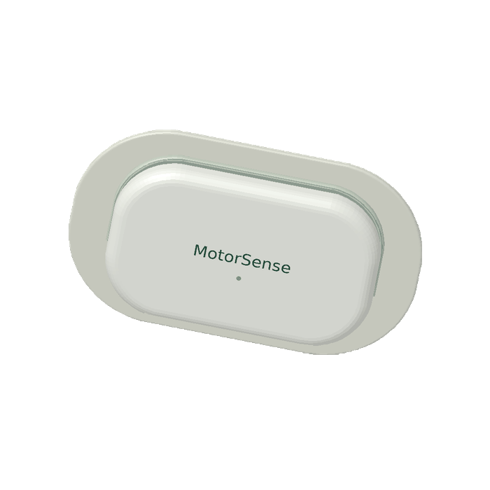
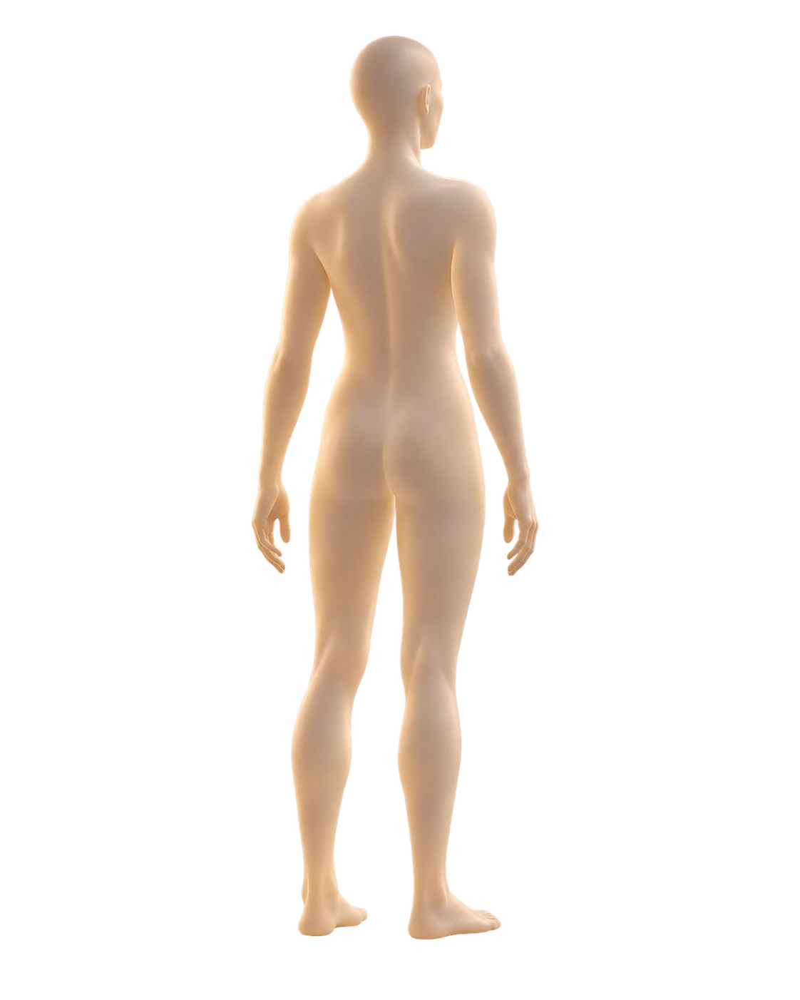

People with Parkinson’s
People living with Parkinson’s worldwide in 2019, according to the WHO.
WHO, 2023 (opens in a new tab)Wearable sensing for Parkinson’s
We’re building a better way to understand Parkinson’s. Discreet sensor patches that turn everyday movement into meaningful insights.
Early-stage development
Focused on everyday monitoring

Why we’re here
Parkinson’s symptoms fluctuate throughout the day. Brief appointments and handwritten diaries can leave gaps in how these changes are recorded and understood.
People living with Parkinson’s worldwide in 2019, according to the WHO.
WHO, 2023 (opens in a new tab)Global prevalence more than doubled over the 25 years reported by the WHO.
WHO, 2023 (opens in a new tab)The interval between entries in a conventional Parkinson’s home diary.
VALIDATE-PD study, 2022 (opens in a new tab)
Select a patch to explore
The MotorSense approach
We’re developing small sensor patches to record movement during everyday activities. Our aim is to understand symptom fluctuations while keeping the monitoring process comfortable and straightforward.
By combining acceleration and rotation signals, we aim to identify patterns in movement and explore how they relate to ON/OFF periods and involuntary movements.
Technology in development. Patch locations and signals shown are illustrative; clinical validation is ahead.
Interpreting the data
We aim to translate sensor recordings into interpretable summaries of motor fluctuations, helping clinicians and researchers study symptoms over time.
Capture acceleration and rotation during daily activities.
Explore motor fluctuations and changes over time.
Support conversations about symptoms and treatment response.
An example of how a movement recording could be summarized over time.
Concept visualization · Not patient data or a clinical assessment
Comfort and usability
We’re considering how a patch feels, how it is worn, and the effort it asks of the wearer. These practical details are part of the technology we’re developing.
Our founding team
Four co-founders bringing together their education, experience, and research interests to develop MotorSense.
Immunology & inflammation
MSc in Immunology & Inflammation.
Business administration
MSc in Business Administration & Innovation in Health Care.
Healthcare innovation
MSc in Business Administration & Innovation in Health Care.
Area of expertise
Education and background to come.
Contact
For questions about MotorSense or the technology we’re developing, send us an email.
contact.motorsense@gmail.com